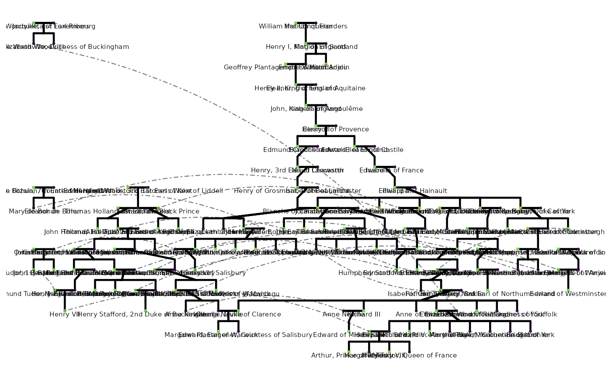

A pedigree dataset representing the familial relationships among key figures in the Wars of the Roses, a series of English civil wars for control of the throne of England fought between the houses of Lancaster and York during the 15th century (1455–1487). The pedigree is rooted at Edward III (r. 1327–1377), whose numerous descendants through multiple lines of succession gave rise to the rival dynastic claims at the heart of the conflict.
war_of_the_rosesA data frame with 95 rows and 9 columns:
Integer. Unique individual identifier.
Integer. Family group identifier assigned by
ped2fam.
Numeric. Mother's id. NA for founders or
individuals whose mother is not recorded.
Numeric. Father's id. NA for founders or
individuals whose father is not recorded.
Character. Full historical name of the individual.
Character. Sex: "M" (male), "F" (female),
"U" (unknown or phantom individual added for pedigree
integrity).
Character. Wikipedia URL for the individual, where available.
Numeric. The id of the co-twin, or NA
if the individual is not a twin.
Character. Twin zygosity: "MZ" (monozygotic)
or "DZ" (dizygotic). NA if not a twin.
Compiled from public genealogical records. https://en.wikipedia.org/wiki/Wars_of_the_Roses
The dataset is useful for illustrating complex pedigree structures, including multiple mating events, consanguineous marriages, half-siblings, and the kind of dense, overlapping family networks that characterize historical royal genealogies. It includes Wikipedia URLs for each individual, making it suitable for teaching pedigree construction and relationship tracing with reference to publicly available biographical sources. Twin and zygosity fields are included where applicable.
Pedigree integrity was verified and phantom individuals were added as
needed using checkSex,
checkParentIDs, and
checkPedigreeNetwork from the BGmisc package.
Family group assignment used ped2fam.
head(war_of_the_roses[, c("id", "name", "sex", "momID", "dadID")])
#> id name sex momID dadID
#> 1 1 Edward III M 116 115
#> 2 2 Philippa of Hainault F NA NA
#> 3 3 Edward, the Black Prince M 2 1
#> 4 4 Joan of Kent F 95 94
#> 5 5 Isabella of England, Countess of Bedford F 2 1
#> 6 6 Enguerrand VII Lord of Coucy M NA NA
# Founders (individuals whose parents are not in the dataset)
war_of_the_roses[
is.na(war_of_the_roses$momID) & is.na(war_of_the_roses$dadID),
c("id", "name")
]
#> id name
#> 2 2 Philippa of Hainault
#> 6 6 Enguerrand VII Lord of Coucy
#> 7 7 Elizabeth de Burgh
#> 11 11 Constance of Castile
#> 12 12 Katherine Swynford
#> 14 14 Isabella of Castile
#> 18 18 Anne of Bohemia
#> 19 19 Isabella of Valois
#> 27 27 John I of Portugal
#> 33 33 Joan of Navarre
#> 35 35 Catherine of Valois
#> 50 50 Ralph Neville
#> 68 68 Humphrey de Bohun, 7th Earl of Hereford
#> 69 69 Joan Fitzalan, Countess of Hereford
#> 71 71 Thomas Holland 1st Earl of Kent
#> 72 72 Edmund Mortimer, 3rd Earl of March
#> 75 75 Alice FitzAlan, Countess of Kent
#> 76 76 Owen Tudor
#> 79 79 Margaret Beauchamp of Bletso
#> 81 81 Thomas Montagu, 4th Earl of Salisbury
#> 86 86 Richard Beauchamp, 13th Earl of Warwick
#> 87 87 Thomas Despenser, 1st Earl of Gloucester
#> 90 90 Jacquetta of Luxembourg
#> 91 91 Richard Woodville, 1st Earl Rivers
#> 92 92 René of Anjou
#> 93 93 Isabella Duchess of Lorraine
#> 94 94 Edmund of Woodstock, 1st Earl of Kent
#> 95 95 Margaret Wake, 3rd Baroness Wake of Liddell
#> 109 109 Maud Chaworth
#> 110 110 Blanche of Artois
#> 113 113 Isabella of Angoulême
#> 116 116 Isabella of France
#> 117 117 Henry Percy, Hotspur
#> 136 136 Edmund of Stafford, 5th Earl of Stafford
#> 139 139 Eleanor of Provence
#> 141 141 Eleanor, Duchess of Aquitaine
#> 143 143 Geoffrey Plantagenet, Count of Anjou
#> 145 145 Matilda of Flanders
#> 146 146 William the Conqueror
#> 148 148 Matilda of Scotland
#> 150 150 Eleanor of Castile
#> 151 151 Isabel of Beaumont
if (requireNamespace("ggpedigree", quietly = TRUE)) {
ggpedigree::ggPedigree(war_of_the_roses,
personID = "id", momID = "momID", dadID = "dadID", famID = "famID",
config = list(
code_male = "M",
code_female = "F",
code_na = "U",
label_column = "name",
label_method = "ggrepel",
label_include = TRUE,
label_text_size = 2
)
)
}
#> Warning: The 'ggrepel' package is required for label methods 'geom_text_repel', 'ggrepel', and 'geom_label_repel'. Please install it using install.packages('ggrepel').
